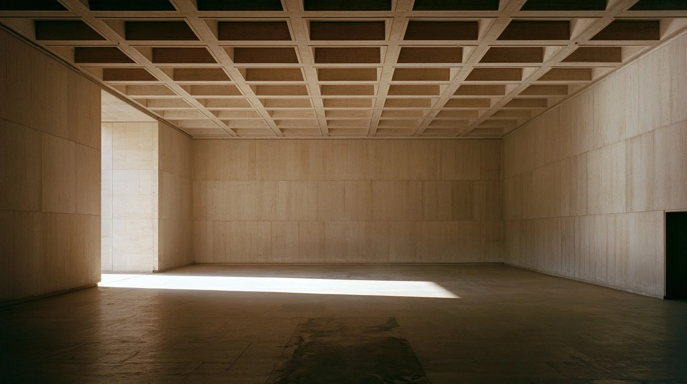

The hero is identical in all five — that is what makes it Monolith. What changes is the ORDER OF THE ARGUMENT, which is the real decision: when the brain appears, whether proof comes before story, and where the people sit. Every figure is read from the ontology at build time: 159 objects, 1,659 observations, 7 live sources.
2 of 5 frames still rendering (people-hall, people-desk) — marked placeholders rather than borrowed stock, so what you are judging is the order of the argument.
The argument in the order it actually happened: you hired us for one thing, here is the thing we found, here is the machine that found it, here is what it reads. The brain lands as the explanation of the finding rather than as decoration.

The engagement was a migration. The finding was not.
Three of the 7 systems resolved into the store, answerable in the same sentence. What it can answer is bounded by what it can read, never by the department the question belongs to.
Proof before story. The console is the second thing on the page, so a sceptical reader hits the receipts before any claim. The brain is demoted to an inline panel — the least decorative use of it, and the most confident.
“A website request can reveal a customer acquisition problem. A data question can reveal an entirely new way to work.”
We were hired to move the price lists. Hundreds of items had a floor beneath their own cost.
The most human of the five. A figure at the window carries the section where the story is told, and the brain becomes the band that separates story from evidence. Warmest, and the one that reads least like infrastructure.
The engagement was a migration, delivered on time. The finding was that the floor had drifted under the cost on hundreds of items — quantified line by line and written back inside a working day.
The brain is the second screen, full bleed, with the thesis set over it. Most striking opening and the biggest risk: a reader who does not already know what they are looking at sees an abstract graphic before a single fact.
We look beyond the requested deliverable. What is slowing the business down?
159 objects, 1,659 observations, 7 live sources. Every value dated twice and sourced once.
Editorial. People photograph left, the unasked question right, then the three-beat strip under it. The brain is a quiet band rather than an event. The steadiest of the five and the easiest to extend to five pages.
The engagement was to migrate price lists. That was delivered. The finding was that hundreds of items carried a price floor beneath what the item cost to buy.